:root, [data-theme="light"] {
/* Soft UI 浅色 */
--bg-canvas: #F8FAFC; /* 画布/中栏 */
--bg-sidebar: #F1F5F9; /* 侧栏/输入面/搜索框底 */
--bg-elevated: #E2E8F0; /* 选中导航底（非强调态） */
--surface-card: #FFFFFF; /* 卡片/弹窗/操作条 */
--border: #E2E8F0; /* 1px 分隔线 */
--text-primary: #1F2937; --text-secondary: #4B5563;
--text-tertiary: #6B7280; --text-muted: #9CA3AF;
--accent: #007AFF; --accent-tint: #E1EFFF;
--danger: #E5484D; --danger-tint: #FEF1F0;
--success: #30A46C;
--shadow-card: 0 8px 24px rgba(100,116,139,.10); /* 柔影替代描边 */
--shadow-card-active: 0 8px 24px rgba(0,122,255,.15);
--shadow-modal: 0 16px 48px rgba(38,48,64,.18);
}
[data-theme="dark"] {
/* macOS Vibrancy 深色：黑就黑下去，底色全中性 */
--bg-canvas: #111113; --bg-sidebar: #161618;
--surface-card: #1C1C1E; --bg-elevated: #242428;
--bg-active-nav: #1E2A38; /* 选中导航（蓝 tint） */
--border: #2A2A2D; /* 1px 描边是唯一分隔手段 */
--text-primary: #F2F2F4; --text-secondary: #98989E;
--text-muted: #636368;
--accent: #0A84FF; --accent-text: #6DB2FF;
--accent-tint: #1E2A38;
--danger: #FF6961; --danger-tint: #2A1517;
--shadow-modal: 0 16px 48px rgba(0,0,0,.5);
/* 卡片不投影，靠 111113→161618→1C1C1E→242428 明度分层 */
}
| Token | 值 | 用途 |
|---|---|---|
| 17 / Semi Bold | --fs-page-title | 中栏标题 |
| 16 / Semi Bold | --fs-modal-title | 弹窗标题 |
| 14 / Semi Bold | --fs-section | 面板标题/资产名 |
| 12 / Semi Bold·Regular | --fs-card-title/body | 卡片名/按钮/导航 |
| 11 / Regular | --fs-caption | 辅助说明/文件行 |
| 10 / Regular | --fs-micro | 徽标/计数/库路径 |
| Token | 值 | 用途 |
|---|---|---|
| --radius-btn | 10px | 按钮/输入框/CTA |
| --radius-modal | 14px | 弹窗/预览区 |
| --radius-card | 16px | 资产卡片 |
| --radius-nav | 9px | 侧栏导航项 |
| --radius-chip | 6px | 徽标/chip |
| --gap-card | 16px | 卡片网格间距 |
| --stroke-width | 1px | 描边一律 1px，选中 1.5-2px |
| 组件 | 规格要点 |
|---|---|
| 搜索框 | 默认收起 32×32 仅图标；点击右对齐展开 380px，右缘与右栏详情面板齐平；失焦收起 |
| 导入压缩包 CTA | 132×32 实心 accent，唯一主 CTA；重新扫描不放顶栏（在设置·导入） |
| 窗口控制（自绘） | 28×28 方钮 r7；最小化/最大化灰，关闭钮 danger 红；hover 浅色 rgba(0,0,0,.06) / 深色 rgba(255,255,255,.08) |
| 资产卡片 | 所有缩略图统一 1:1（用户拍板四卡等高，模型图裁切居中）；r16；浅色柔影代描边；选中：2px accent 描边 + 右上角 22×22 蓝对勾徽章 |
| 多选操作条 | 白/242428 底 r14 投影，相对中栏水平居中悬于网格底部；已选胶囊 → 指派分类（实心蓝）→ 删除（danger-tint）→ 取消 |
| 详情文件槽位 | 按 基础色/法线/粗糙度/AO/置换/元数据/预览/其他 分组；每行可单独拖出到 SU/D5 |
| 删除撤销 | 确认 + 底部 toast 内 5 秒撤销条（蓝底"撤销 Ns"倒计时） |
| 设置弹窗 | 760×560，左 tab（172px）右内容；导入 tab：处置三档单选+并发 stepper+重新扫描；外观 tab：主题三选卡（未实现项禁用标"v0.2 留位"）；关于 tab：版本号胶囊醒目+检查更新留位 |
| 自定义渲染 | 只两个滑块：反光强度、凹凸强度；保存→离屏渲一帧存 JPG，coverSource='manual' |
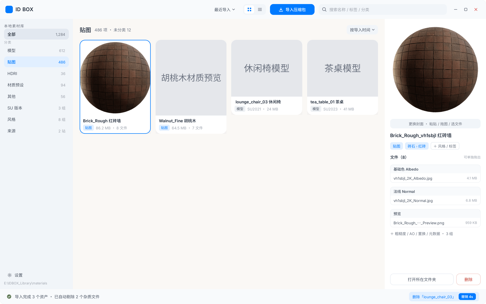
01 主界面（搜索展开态）
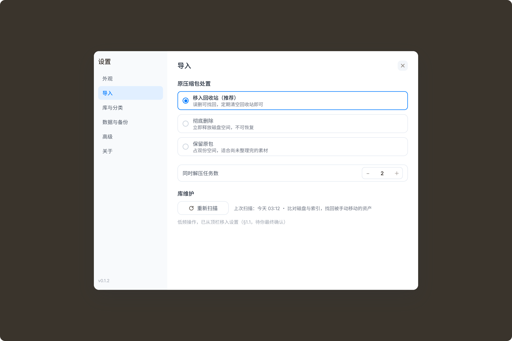
02 设置·导入
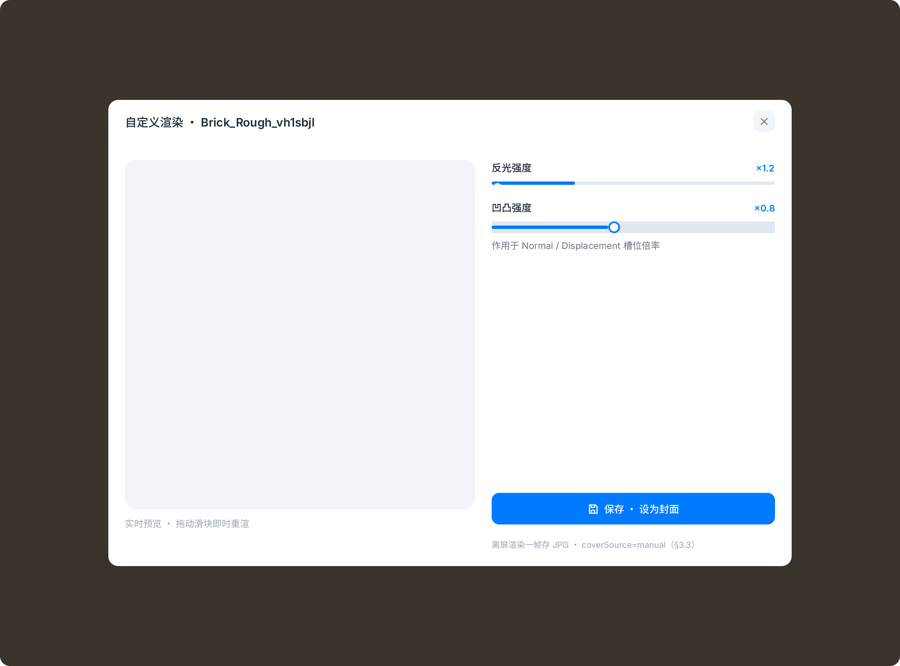
03 自定义渲染
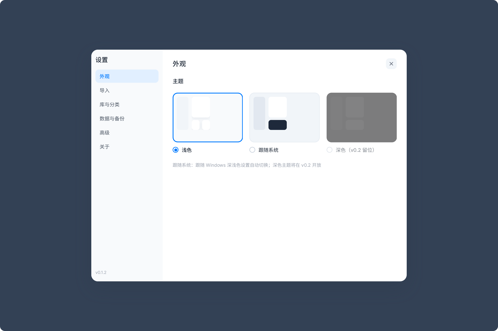
05 设置·外观
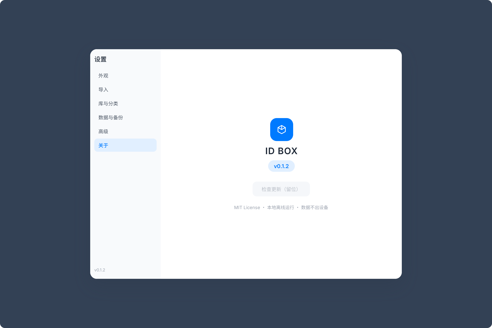
06 设置·关于
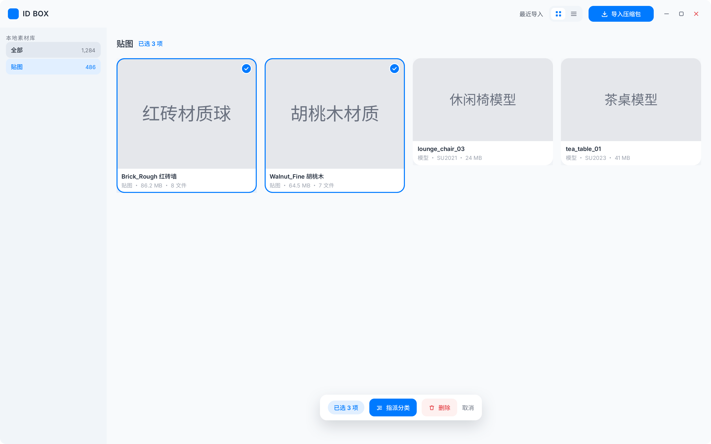
07 多选操作条
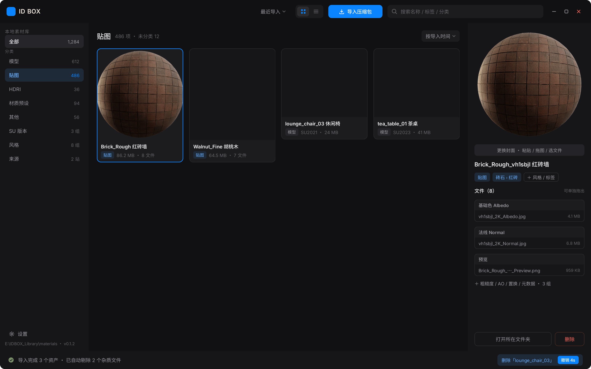
04 主界面
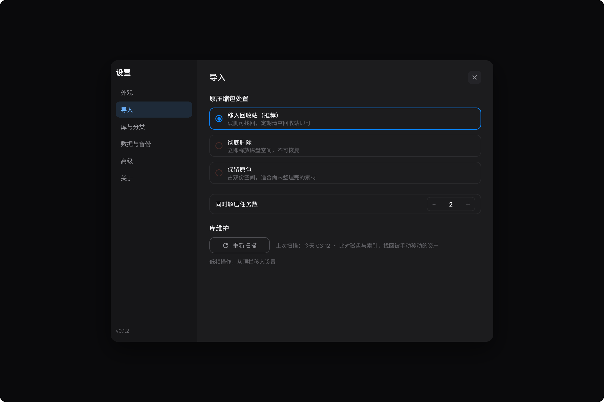
10 设置·导入
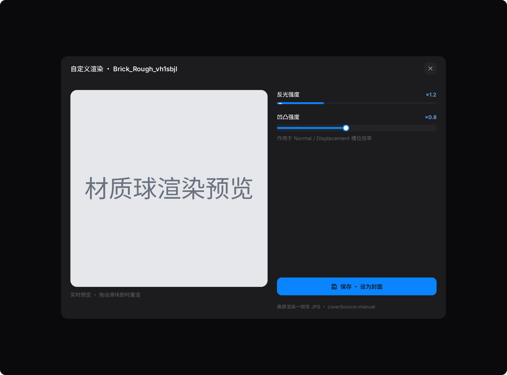
11 自定义渲染
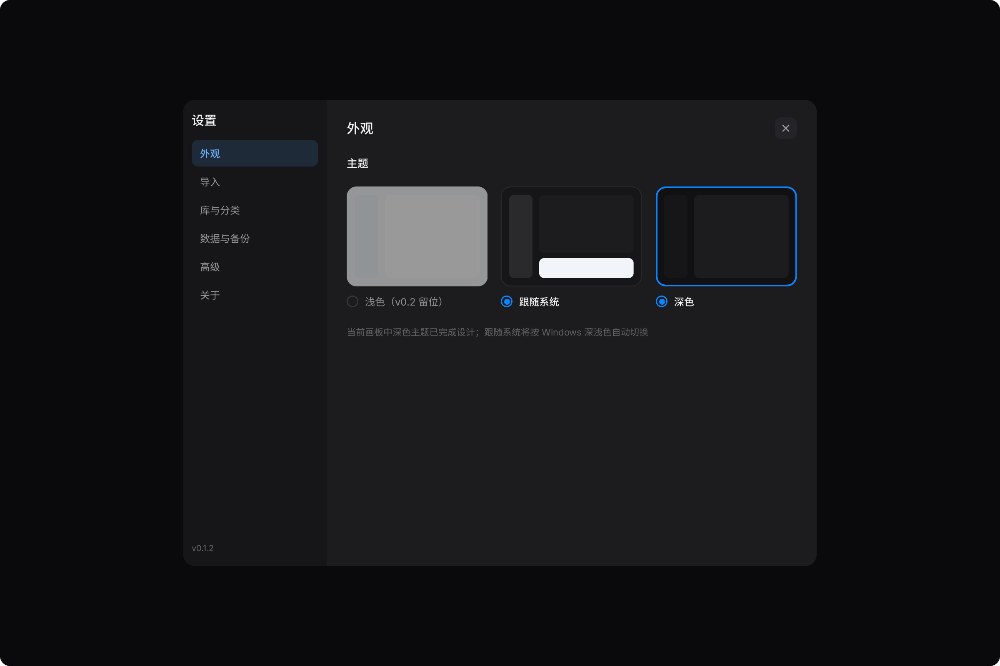
12 设置·外观
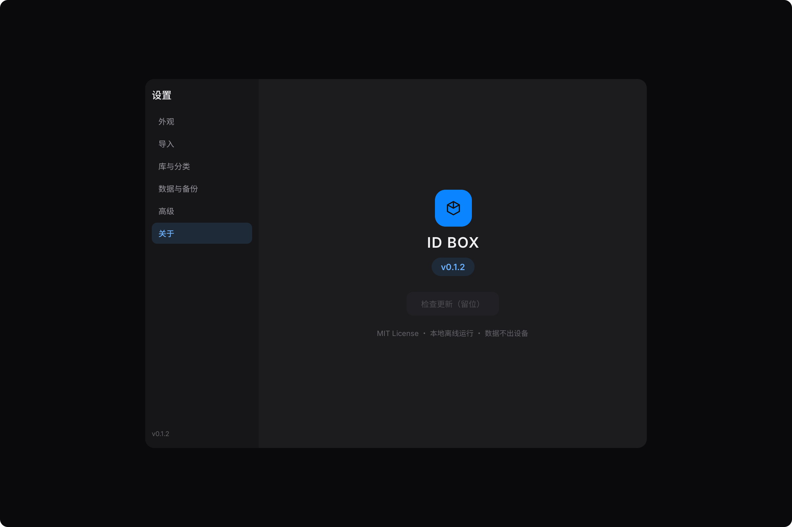
13 设置·关于
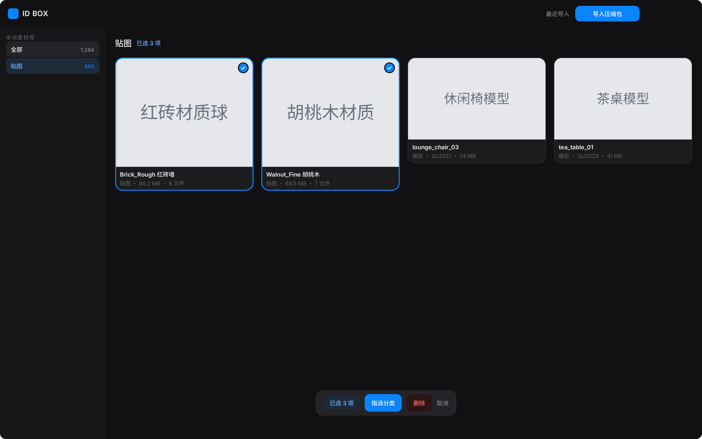
14 多选操作条
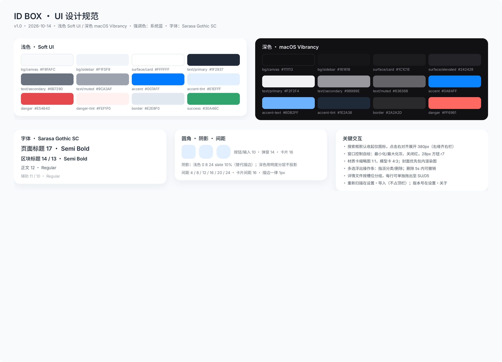
09 设计规范面板